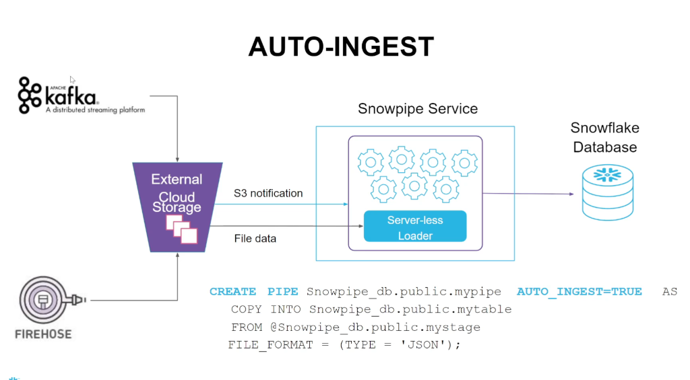

Cloud Antics
Data Loading: Batch vs. Snowpipe
How do we get it into the store (The Database)?
You have two choices: The Moving Truck or The Conveyor Belt.
The "Moving Truck"
You wait until you have 1,000 boxes. Then you load them all onto a huge truck and drive them over at midnight.
Pros: Very efficient for huge amounts of data. Cheap.
Cons: Data is not available until the truck arrives (Latency).
📁 Scenario A: From Cloud Storage (S3/Azure)
CREATE STAGE my_s3_stage
url='s3://mybucket/encrypted_files/'
credentials=(aws_key_id='******' aws_secret_key='******')
encryption=(master_key = '********')
file_format = my_csv_format;
-- 2. Load Data using COPY
COPY INTO my_table
FROM @my_s3_stage
PATTERN='.*sales.*.csv';
Complete Cloud Storage Loading Flow
💻 Scenario B: From Local Storage (Laptop)
CREATE STAGE my_stage FILE_FORMAT = my_csv_format;
-- 2. PUT data to Stage (Uses local resources!)
PUT file:///data/data.csv @my_stage;
-- 3. COPY into Table
COPY INTO my_table FROM @my_stage;
Complete Local File System Loading Flow
⚠️ Important: Compression during PUT uses local
resources. Your laptop needs sufficient memory and /tmp space, or the PUT
will fail!
💡 Key Distinction:
PUT = Upload from computer → Stage (Loading Dock)
COPY INTO = Move from Stage → Table (Store)
⏰ Scheduling: Yes, you can schedule the Truck! (e.g., every hour via Airflow). But it runs on Time, not when files arrive.
The "Conveyor Belt"
As soon as one single box lands on the dock, the belt detects it and moves it inside instantly.
Pros: Data is ready in seconds (Real-Time).
Cons: Using the belt 24/7 costs a bit more (Overhead).
🔄 How Snowpipe Works
Snowpipe Architecture & Flow
📋 Key Concepts:
- Named Object: Contains a COPY statement used by Snowpipe
- Source Stage: Where data files land (Internal or External)
- Target Table: Destination for loaded data
- Ingestion Queue: Loads data continuously from queue
- REST Endpoint: Trigger via API or S3 Event Notification
CREATE PIPE my_pipe AS
COPY INTO my_table FROM @my_stage;
⚙️ Serverless Compute: Snowpipe uses Snowflake-provided compute services (not your warehouse). You only pay for data loaded.
💡 Best Practice: Size files between 10MB and 100MB (compressed) when staging files for Snowpipe ingestion. This optimizes performance and cost.
🎛️ Control: Pipes can be paused and resumed. Use
SYSTEM$PIPE_STATUS() to check status.
🔔 Two Ways to Trigger Snowpipe
📞 Method 1: REST API

Use when: Your application controls when to load
AS COPY INTO mytable
FROM @mystage;
🔄 Method 2: Auto-Ingest
Use when: S3/Azure triggers automatically
AUTO_INGEST=TRUE
AS COPY INTO mytable
FROM @mystage;
🎯 Key Difference:
REST API: You call Snowpipe manually (via application code)
Auto-Ingest: Cloud storage (S3/Azure) notifies Snowpipe automatically when
files arrive
Batch (Truck): YOU decide when to drive. "I will run this script at 2:00 AM."
Snowpipe (Conveyor): THE FILE triggers it. "Oh, a file appeared in S3? Let's go!"
🎯 Real-World Use Cases: When to Use Each
🚛 Use BATCH (COPY INTO) when:
- Migration from traditional data sources - Moving historical data from legacy systems
- Transaction boundary control - Need BEGIN/START TRANSACTION, COMMIT, ROLLBACK
- Independently scale compute - Different workloads need different warehouse sizes
- Daily/Hourly Reports - Scheduled analytics that don't need real-time data
- Cost optimization - Save money on predictable, scheduled loads
⚙️ Use SNOWPIPE (Continuous) when:
- Ingestion from modern data sources - IoT sensors, clickstreams, logs
- Data available in seconds - Real-time dashboards, fraud detection
- No scheduling needed - Auto-ingest as files arrive (event-driven)
- Serverless model - No warehouse management, Snowflake handles compute
- Live Dashboards / Alerts - Need immediate data for decision-making
💡 Pro Tip: You can use both! Many companies use Batch for historical data migration and Snowpipe for ongoing real-time ingestion.